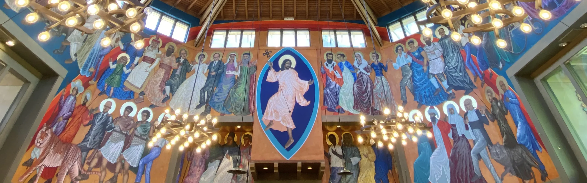
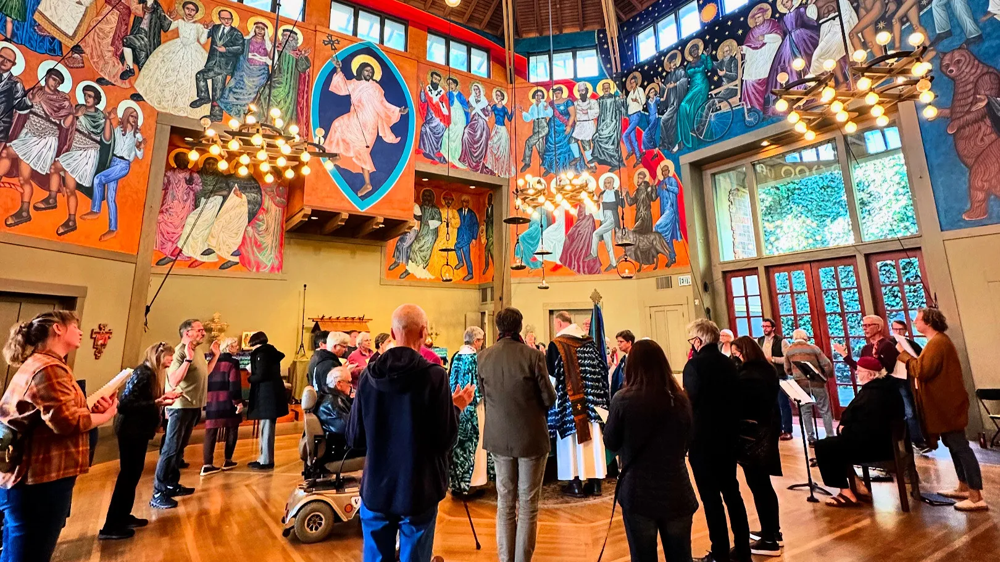
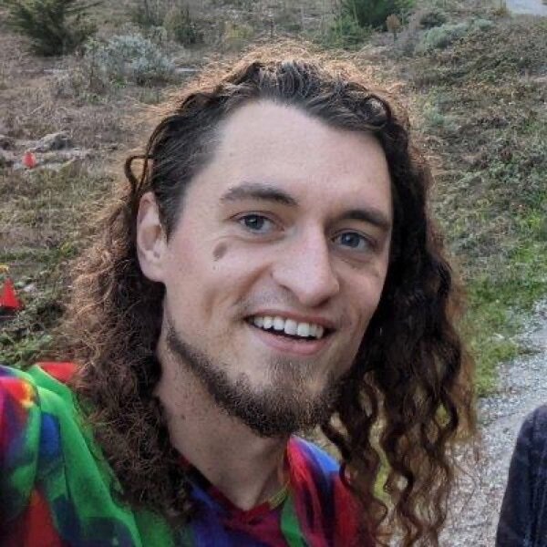
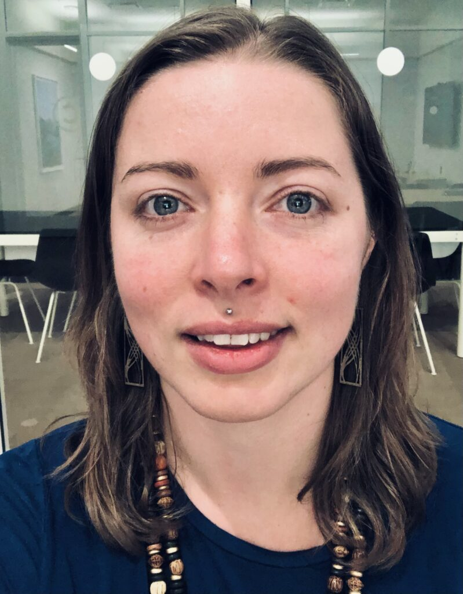

A one-day summit
Meaning in the age of AI
RegisterWe are bringing together people shepherding communities through this change and people building the technology driving it, for a day of talks, debate, and conversation. Some sessions will be recorded and shared; most of the day is off the record.
“One way of framing this issue is in terms of “the meaning of life”, Luc Ferry’s “le sens du sens”, the basic point which gives real significance to our lives. Almost every action of ours has a point; we’re trying to get to work, or to find a place to buy a bottle of milk after hours. But we can stop and ask why we’re doing these things, and that points us beyond to the significance of these significances. The issue may arise for us in a crisis, where we feel that what has been orienting our life up to now lacks real value, weight. So a successful doctor may desert a highly paid and technically demanding position, and go off with Médecins Sans Frontières to Africa, with a sense that this is really significant. A crucial feature of the malaise of immanence is the sense that all these answers are fragile, or uncertain; that a moment may come, where we no longer feel that our chosen path is compelling, or cannot justify it to ourselves or others. There is a fragility of meaning, analogous to the existential fragility we always live with: that suddenly an accident, earthquake, flood, a fatal disease, some terrible betrayal, may jolt us off our path of life, definitively and without return. Only the fragility that I am talking about concerns the significance of it all; the path is still open, possible, supported by circumstances, the doubt concerns its worth.”Charles Taylor, A Secular Age, ch. 8, “The Malaises of Modernity”
St Gregory of Nyssa is an Episcopal church in Potrero Hill, designed by the architect John Goldman and completed in 1995.

April Lawson
Debate & dialogue · ex-Braver Angels
April founded and built Braver Angels’ national debate program, growing it from a single event to thousands of participants a month, and co-directs the College Debates & Discourse alliance. She spent four years researching and editing for David Brooks at the New York Times, and now consults on debate and dialogue. She will moderate the summit’s central debate.
The Rev. Peter Levenstrong
Associate Rector, St Gregory of Nyssa
Peter is Associate Rector at St Gregory of Nyssa, where he created “Living Stories,” a collaborative, multisensory model of preaching that turns the sermon into a shared act of interpretation rather than a monologue from the pulpit. His central question is what worship and formation should keep stubbornly human as AI reshapes everything around them. He explores that at The Human Part, a Substack on ministry and meaning in the AI age.

Malcolm Ocean
Organizational development, Softmax
Malcolm writes on trust and works on organizational development at Softmax, a San Francisco AI-alignment startup pursuing “organic alignment.” His long-running blog malcolmocean.com explores agency, coordination, and how groups of people, and minds, can actually think and act together well.

Jessica Ocean
Open Immanence Society | Psych Crisis
Jess founded Psych Crisis in 2021 with a grant from Georgetown’s Emergent Ventures, after losing her brother to suicide in the mental-health crisis system, and serves as its chairman and former executive director. She is responsible for the obsessive inclusion of references to the work of philosopher Charles Taylor that you may notice throughout the day.
Toby Shorin
Writer & researcher · founder, Other Internet
Toby is a writer and researcher who studies how culture shifts in tandem with technology. He co-founded Other Internet, a research institute behind some of the most widely-read essays on crypto, community, and social technology, and writes the long-running Subpixel Space. His current project, Care Culture, maps the changing landscape of mental health, wellness, and spirituality, asking what genuine care and meaning look like in a secular, technologized age.
Nadia Asparouhova
Writer & independent researcher · author of Working in Public
Nadia Asparouhova is a writer and independent researcher who studies how the internet reshapes the way people build things together. Writing earlier as Nadia Eghbal, she became one of the definitive voices on open source software with the Ford Foundation report Roads and Bridges and the book Working in Public, then turned to the cultural and political life of the tech world, with essays in The New Atlantis, Wired, and Tablet. Her latest book, Antimemetics, is about ideas that resist being shared or remembered, the taboos, blind spots, and quietly important truths that don’t spread on their own. She writes the Monomythical newsletter and keeps her work at nadia.xyz.
Convened by the Open Immanence Society, in partnership with St Gregory of Nyssa Episcopal Church. Questions: hello@openimmanence.org